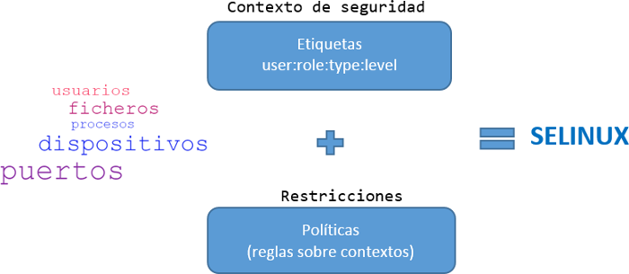
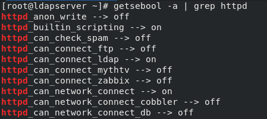
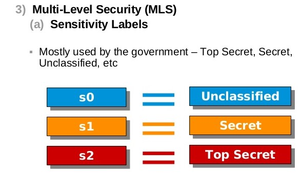

Viene habilitado por defecto a la hora de instalar el SO
Tiene 2 tipos de políticas: Específica y MLS
Tiene 3 modos de operación: Enforcing, Permissive, Disabled
Al iniciarse el sistema aplica su contexto de seguridad, llamado etiqueta
Utiliza reglas para restringir el acceso

Como funciona
SELinux responde fundamentalmente a la pregunta: ¿Puede un sujeto hacer x accion sobre un objeto?
Arquitecturas: MAC vs DAC
Arquitectura DAC
Se basa en propietarios y grupos
Utiliza los permisos clásicos de los sistemas UNIX
rwx
lectura, escritura, ejecución
Se gestionan los permisos con el comando chmod
Arquitectura MAC
Se basa en reglas
Aplica su propio contexto de seguridad
Si las permisos DAC niegan el acceso las reglas MAC no se aplican
Se gestionan las reglas con el comando semanage
Tipos de política
Existen dos tipos de políticas:
- Política Específica
- Política MLS
Política Específica: Etiqueta
Es el contexto de seguridad de todos los objetos y sujetos
El tipo de la etiqueta es el aspecto más importante
Según el tipo de etiqueta se aplicará la regla a la que va asociada
El nivel de la etiqueta es opcional
Se gestionan con los comandos:
restorecon
chcon
Para visualizar etiquetas usaremos los comandos:
ls -Z
id -Z
Crear un fichero llamado .autorelabel en el directorio raíz si se requiere un reetiquetado del sistema
Política Específica: Reglas
Se gestionan con el comando semanage
Van asociados al tipo de etiqueta del objeto
El mensaje de error de una regla se almacen en el AVC(Caché de Vector de Acceso)
Política Específica: AVC (Caché de Vector de Acceso)
avc: denied: Se denegó una operación.
{ read }: Esta operación necesita los permisos read.
pid=1484: El proceso con PID 1484 ejecutó la operación (o intentó hacerlo).
comm=“httpd”: Este proceso es una instancia del servidor httpd.
name=“myconf.conf”: El objeto de destino se llamaba myconf.conf. En ciertos casos también se puede tener una variable path con una ruta completa.
dev=dm-0: El dispositivo que alberga el objeto destino es un dispositivo lógico LVM.
ino=794975: El objeto está identificado por el número de inodo 794975.
scontext=system_u:system_r:httpd_t:s0: Este es el contexto de seguridad del proceso que ejecutó la operación.
tcontext=unconfined_u:object_r:user_home_t:s0: Este es el contexto de seguridad del objeto destino.
tclass=file: El objeto destino es un archivo.
permissive=0: El modo de operación permissive está desactivado.
Política Específica: Booleanos
Los booleanos permiten cambiar partes de la política de SELinux en tiempo de ejecución, sin necesidad de crear/modificar reglas
Se gestionan con los comandos getsebool y setsebool
Cambiar el estado de un booleano: setsebool booleano_name [on|off]
Ver todos los booleanos: getsebool -a
Fichero que permite cambiar el nombre de los booleanos
/etc/selinux/targeted/booleans.subs_dist

Política Específica: Usuarios
Se le da un rol a un usuario de Linux
Directorio donde se guardan los usuarios de SELinux
/etc/selinux/targeted/contexts/users/
Tipos de política: MLS
Seguridad Multinivel
Se usa en implementaciones más avanzadas
El usuario, rol y nivel son los aspectos más importantes

Modos de Operación
Enforcing: Permite o niega el acceso a objetos guiándose por las reglas definidas por defecto
Permissive: No realiza ninguna acción de denegación, solo registra las acciones no permitidas en los logs del sistema
Disabled: No se recomienda utilizar este modo si luego queremos activar SELinux
Para poder visualizar el modo de operación en el que trabaja SELinux se utiliza el comando getenforce o sestatus si se quiere más información. Para cambiar de modo de operación se utiliza el comando setenforce.
Estructura proyecto: Problema Docker I
Estructura proyecto: Problema Docker II
Estructura proyecto: Solución KVM
Solución para implementar virtualización completa con Linux